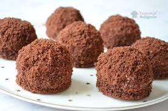

Köstebek Pasta Tarifi

Köstebek pasta sevimli görüntüsüyle gönlümüze ve midemize taht kurarken porsiyonluk olması servis kolaylığı sağlarken, içindeki krem şanti dolgusu ve arasındaki muzla adeta zirveye oynuyor.
Kaç Kişilik : 4 Kişilik
Hazırlama Süresi : 30 Dakika
Pişirme Süresi : 20 Dakika
Köstebek Pasta Tarifi İçin Malzemeler:
- 3 adet yumurta
- 1 su bardağı toz şeker
- 1/2 çay bardağı süt
- 1/2 çay bardağı sıvı yağ
- 2 tepeleme yemek kaşığı kakao
- 1 paket kabartma tozu
- 1 paket vanilya
- 1/2 su bardağı un
- 2 paket krem şanti
- 1,5 su bardağı soğuk süt
- 2 adet muz
Köstebek Pasta Tarifi Nasıl Yapılır:
- İç dolgusu için krem şantiyi hazırlayın. 1,5 su bardağı soğuk süt ile 2 paket krem şantiyi iyice çırpın. Krem şantiyi soğuması için dolaba kaldırın.
- Kek için; yumurta ve şekeri 5 dakika boyunca çırpın. Ardından diğer malzemeleri ekleyin ve güzelce karıştırın. Karışımı fırına verin.
- Kek piştikten sonra fırından alın ve ılıklaşmasını bekleyin. Yuvarlak bir kesme kalıbıyla kekinizi yuvarlak yuvarlak kesin.
- Krem şantiyi sıkma torbasına alın ve yuvarlak kestiğiniz kek parçalarının üstüne sıkın.
- Muzları yuvarlak yuvarlak dilimleyin ve üstlerine yerleştirin.
- Muzların üstüne tekrar bir tepe oluşturacak şekilde krem şantiyi sıkın.
- Üstüne krem şanti sıktığınız kekleri un haline getirdiğiniz kek kırıntıları ile kaplayın ve soğuması için tekrar buzdolabına kaldırın.
- Bu şekilde yaklaşık 30 dakika dolapta beklettikten sonra servis edin.
AFİYET
OLSUN